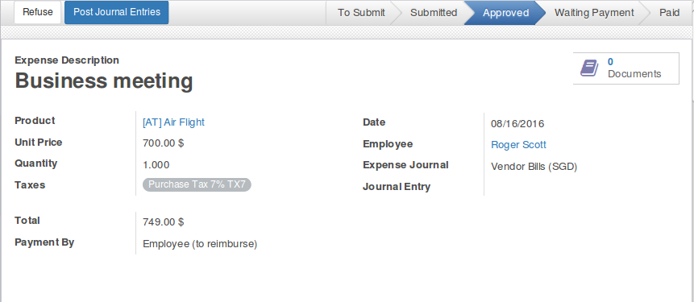

This Module is used to add expense salary rule which add employee's expenses directly into employee payslips based on expenses and payslips match dates.
Approved Expenses
All approved expenses are auto calculated into employee's payslips.

Expenses Added in employee's payslip
All approved expenses are added into employee's payslips based on expenses and payslips match dates.